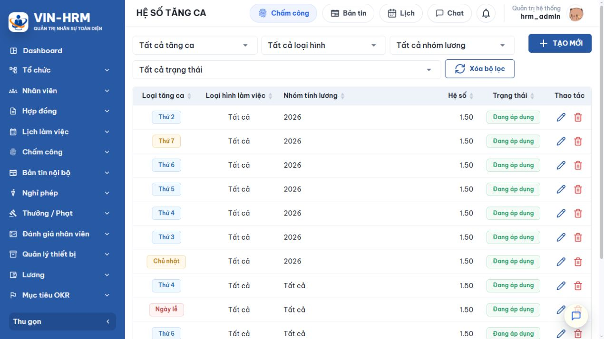
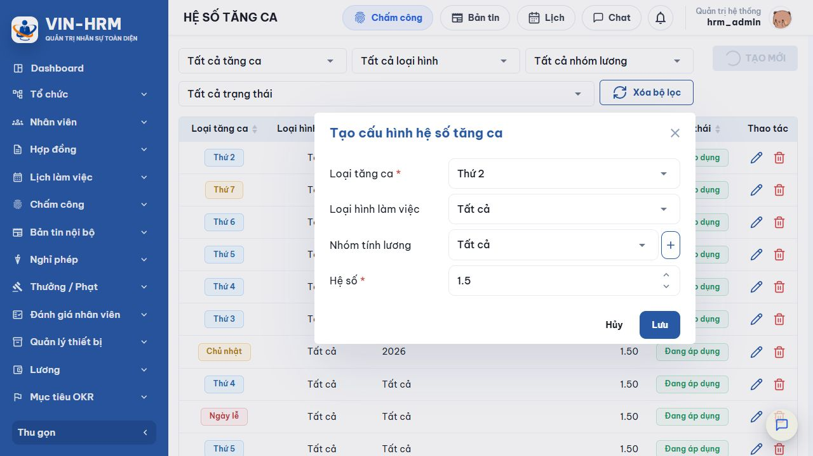

1. Mục đích và phạm vi
Hệ số tăng ca quy định số nhân với đơn giá giờ khi tính tiền OT. Cấu hình có thể áp dụng chung hoặc chi tiết theo thứ/ngày lễ, loại hình làm việc và nhóm tính lương; bộ tính lương tự chọn cấu hình phù hợp nhất của nhân viên.
2. Truy cập
Mở Lương → Hệ số OT. Chức năng cần quyền quản lý lương.

3. Bộ lọc và cột dữ liệu
| Thành phần | Ý nghĩa |
|---|---|
| Tất cả tăng ca | Lọc Thứ 2–Chủ nhật hoặc Ngày lễ. |
| Tất cả loại hình | Lọc làm việc cố định, linh động hoặc cấu hình chung. |
| Tất cả nhóm lương | Lọc cấu hình chung hoặc riêng một nhóm. |
| Tất cả trạng thái | Đang áp dụng hoặc Ngừng áp dụng. |
| Hệ số | Giá trị nhân, hiển thị hai chữ số thập phân. |
| Thao tác | Sửa hoặc xóa; trạng thái được đổi trong biểu mẫu sửa/luồng trạng thái. |
4. Tạo cấu hình hệ số tăng ca

- Chọn Tạo mới.
- Chọn một hoặc nhiều loại tăng ca. Khi chọn nhiều, hệ thống tạo từng cấu hình độc lập và báo kết quả cho từng loại.
- Chọn loại hình làm việc hoặc Tất cả.
- Chọn nhóm tính lương hoặc Tất cả. Nút dấu cộng cho phép tạo nhanh nhóm nếu tài khoản có quyền.
- Nhập hệ số từ 1 đến 999,99.
- Chọn Lưu; kiểm tra các dòng thành công và xử lý riêng dòng bị trùng phạm vi.
Ý nghĩa các lựa chọn
| Trường/Lựa chọn | Ý nghĩa |
|---|---|
| Thứ 2 … Chủ nhật | Áp dụng cho OT phát sinh trong thứ tương ứng. |
| Ngày lễ | Áp dụng cho ngày có bản ghi Nghỉ lễ đang áp dụng trong Danh mục ngày lễ. |
| Loại hình – Tất cả | Không giới hạn theo hình thức làm việc. |
| Làm việc cố định | Chỉ nhân viên có WorkType cố định. |
| Làm việc linh động | Chỉ nhân viên có WorkType linh động. |
| Nhóm tính lương – Tất cả | Áp dụng chung cho mọi nhóm. |
| Một nhóm cụ thể | Chỉ nhân viên đang thuộc nhóm đó. |
| Hệ số | Số nhân với đơn giá giờ OT. Ví dụ 1,5 nghĩa là 150% đơn giá giờ theo công thức lương đang áp dụng. |
5. Quy tắc chọn cấu hình
Trong các cấu hình đang áp dụng, hệ thống chỉ xét dòng có loại ngày phù hợp và phạm vi chứa nhân viên. Thứ tự ưu tiên là:
- Nhóm tính lương cụ thể được ưu tiên hơn “Tất cả nhóm”.
- Trong cùng mức nhóm, Loại hình làm việc cụ thể được ưu tiên hơn “Tất cả loại hình”.
- Nếu ngày là Nghỉ lễ đang áp dụng, hệ thống tính cả hệ số theo thứ và hệ số Ngày lễ, sau đó dùng giá trị lớn hơn.
| Ví dụ cấu hình phù hợp | Kết quả ưu tiên |
|---|---|
| Thứ 2/Tất cả/Tất cả = 1,5 và Thứ 2/Tất cả/Nhóm A = 2,0 | Nhân viên Nhóm A dùng 2,0; nhóm khác dùng 1,5. |
| Thứ 2/Tất cả/Nhóm A = 1,5 và Thứ 2/Cố định/Nhóm A = 1,8 | Nhân viên cố định Nhóm A dùng 1,8. |
| Thứ 2 = 1,5; Ngày lễ = 3,0; ngày lễ rơi vào Thứ 2 | Dùng 3,0 vì lớn hơn. |
| Thứ 2 = 2,0; Ngày lễ = 1,5; ngày lễ rơi vào Thứ 2 | Dùng 2,0; hệ thống không làm giảm hệ số theo thứ. |
| Một phạm vi chỉ có một cấu hình đang áp dụng Khóa phạm vi gồm Loại tăng ca + Loại hình làm việc + Nhóm tính lương. Nếu đã có dòng đang áp dụng cùng khóa, phải ngừng dòng cũ trước khi tạo hoặc kích hoạt dòng mới. |
6. Sử dụng khi tính lương
Bộ tính lương đọc bản ghi chấm công và lịch OT của nhân viên, xác định thời lượng tăng ca, tìm hệ số đang áp dụng theo quy tắc trên rồi tính tiền OT. Nếu không tìm thấy hệ số phù hợp, giá trị hệ số trả về 0 và khoản OT có thể không được tính như mong muốn.
| Cấu hình liên quan Không có khóa trực tiếp tại Hệ thống → Cấu hình. Hệ số OT phụ thuộc Nhóm tính lương, Loại hình làm việc trong thông tin công việc và Danh mục ngày lễ. Ba nguồn này phải đồng nhất trước khi chạy lương. |
7. Sửa, ngừng áp dụng và xóa
| Tình trạng | Quy tắc |
|---|---|
| Chưa phát sinh dữ liệu | Có thể sửa phạm vi và hệ số, miễn không trùng một cấu hình đang áp dụng khác. |
| Đã phát sinh dữ liệu | Không được sửa hoặc xóa. Hãy ngừng áp dụng cấu hình cũ và tạo cấu hình mới. |
| Kích hoạt lại | Bị chặn nếu đã có cấu hình đang áp dụng cùng phạm vi. |
| Xóa | Chỉ thực hiện khi chưa phát sinh dữ liệu; nếu đã dùng, chuyển Ngừng áp dụng. |
8. Lỗi thường gặp
| Thông báo/Hiện tượng | Cách xử lý |
|---|---|
| Vui lòng chọn ít nhất một loại tăng ca | Chọn tối thiểu một thứ hoặc Ngày lễ. |
| Hệ số phải ≥ 1 | Nhập từ 1 đến 999,99. |
| Đã có cấu hình đang áp dụng cùng phạm vi | Tìm theo bốn bộ lọc, ngừng dòng cũ hoặc thay đổi phạm vi. |
| Nhóm tính lương không tồn tại | Tải lại danh sách hoặc chọn nhóm còn tồn tại. |
| Hệ số đã phát sinh dữ liệu, không thể sửa/xóa | Ngừng áp dụng và tạo bản ghi mới. |
| OT ngày lễ chưa đúng | Kiểm tra ngày là loại Nghỉ lễ đang áp dụng, không phải Nghỉ bù; kiểm tra cả hệ số theo thứ vì hệ thống lấy số lớn hơn. |
9. Danh sách kiểm tra
- Đủ Thứ 2–Chủ nhật cần dùng.
- Có cấu hình Ngày lễ.
- Loại hình đúng hồ sơ nhân viên.
- Nhóm lương đúng.
- Không trùng phạm vi đang áp dụng.
- Đã kiểm tra một bảng lương thử.